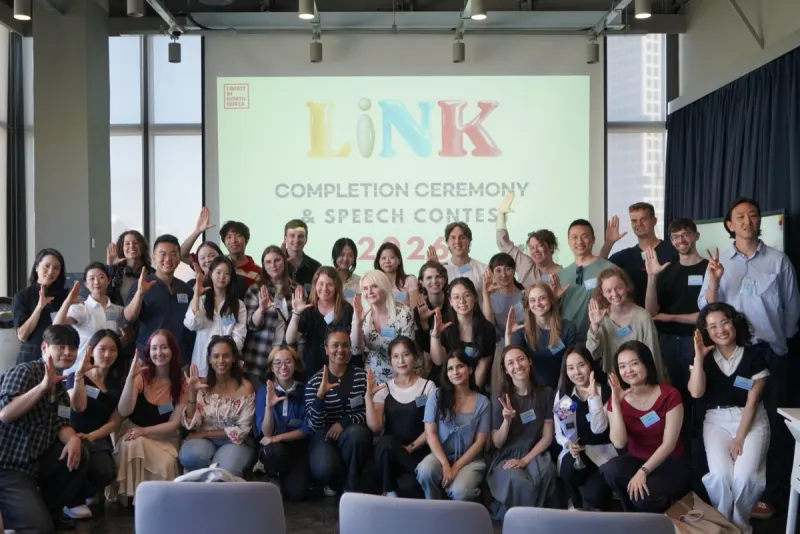
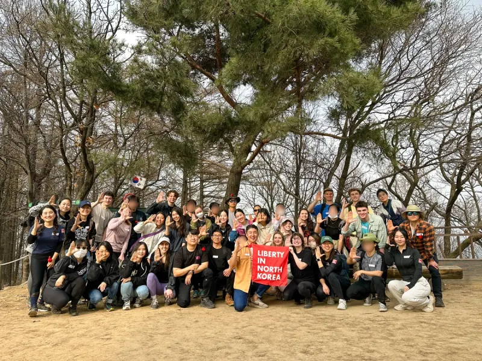
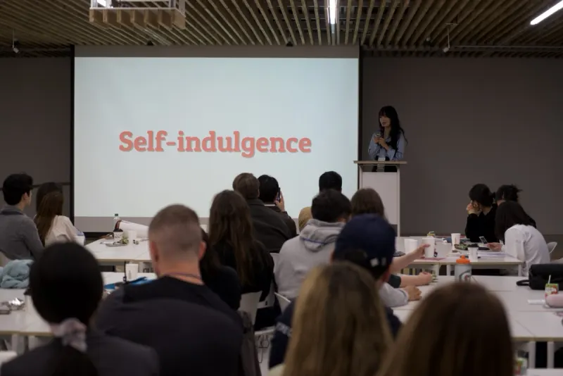
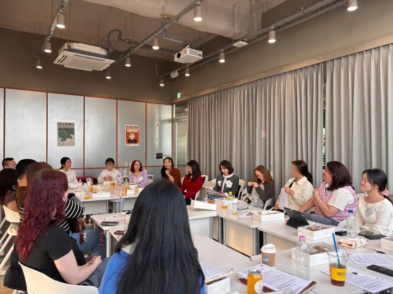

5년의 검증된 지속성 위에,
1:1 학습과 글로벌 커뮤니티를 결합한 링크의 영어 프로그램
Help students speak with confidence — and join a global community advocating for change.
11학기 · 누적 참가자 1,360명 · 48개국 봉사자와 함께 성장하는 렐프 Since 2021, LELP has turned thousands of hours of 1:1 conversation into confidence, careers, and a global community — join the movement.

LELP(렐프)의 시작 배경과 현재 What Is LELP?
탈북민이 만드는 삶의 변화 A biannual English conversation program
탈북민의 삶의 변화는 개인 차원을 넘어 우리 사회가 북한 인권 문제를 인식하고 국제 변화의 흐름을 주도하는 데 기여합니다. LiNK는 탈북민이 자율적으로 삶의 모습을 만들 수 있도록 다양한 형식의 역량강화 프로그램을 만들고 운영합니다. The LiNK English Language Program (LELP) connects North Korean students with global volunteers for 1:1 English sessions held online, complemented by in-person activities.
왜 영어 회화인가 2 hours a week, for 12 weeks
탈북민들이 영어를 통해 자신감을 키우고 더 많은 기회를 얻도록 돕습니다. 향상된 영어 실력은 커리어 개발과 글로벌 애드보커시에 필수적인 만큼, 충분한 학습 기회를 통해 이들이 변화의 주체로 성장할 수 있도록 지원합니다. By meeting two hours a week, volunteers help students improve their speaking skills, build confidence, and prepare for academic and career opportunities.
2021년 여름부터, 11학기 Amplifying voices, advocating for change
연 2회 학기제로 시작해 2026년 봄까지 11학기를 진행했으며, 지금까지 1,360명(탈북 청년 678명 · 영어 봉사자 682명)의 열정 넘치는 참가자와 함께해 왔습니다. Many students go on to use their English to amplify their voices and advocate for change on the global stage.
📸 지난 활동 둘러보기Past Activities







누가 렐프와 함께 하나요?Who Joins LELP?
참여자 연령대Participant Age Distribution
🎓 학생 참여 동기Student Motivations
해외 목표 준비자Overseas Preparers
교환학생·어학연수·대학/대학원 진학·해외 취업 등 해외 진출을 목표로 준비 Preparing for exchange programs, study-abroad language courses, university/graduate school, or overseas careers.
공인 영어 시험 대비Standardized Exam Prep
TOEIC·IELTS·TOEFL 등 공인 영어 시험 점수 향상을 위해 회화 실전 훈련 Practical conversation training for TOEIC, IELTS, TOEFL and other standardized English tests.
글로벌 소통 지향Global Communicators
다양한 배경의 사람들과 자유롭게 소통하며 시야와 관계망을 확장 Freely conversing with people from diverse backgrounds and expanding perspectives and networks.
실무 영어 활용Workplace English
현재 업무 수행에 필요한 실전 영어 커뮤니케이션 역량 강화 Strengthening practical English communication for current job responsibilities.
북한 이슈 확산자NK Issue Amplifiers
국제 무대에서 북한 인권 이슈에 대한 인식 제고와 목소리 전달을 목표 Raising awareness of North Korean human rights on the international stage and amplifying their voices.
대학 학업 병행Alongside University Studies
대학 전공 수업·교양 영어 등 학교 학업과 연계해 회화 실력 보완 Supplementing conversational skills in tandem with university major courses and general English.
💛 봉사자 참여 동기Volunteer Motivations
사회이슈 관심자Social Issue-Driven
NGO, 국제개발, 인권 등에 관심을 가지고 사회적 변화와 링크 미션을 지지 Interested in NGOs, international development, and human rights — supporting social change and LiNK's mission.
교육적 열정가Passionate Educators
교육에 대한 열정을 바탕으로 체계적인 수업 제공과 학생의 삶의 변화를 지원 Delivering structured lessons out of a passion for teaching and supporting real change in students' lives.
상호 문화 교류자Cross-cultural Exchangers
다양한 문화를 경험하고, 호기심과 이해를 바탕으로 학생과 상호 교류를 지향 Curious about diverse cultures — pursuing genuine understanding and mutual exchange with students.
성장 추구자Growth Seekers
자기 개발과 경력 성장을 목표로 학생과 함께 성장하며 장기적으로 참여 Committed to personal development and career growth, participating long-term while growing with students.
렐프를 경험한 사람들의 이야기Stories from LELP
학생 후기Student Testimonials
"렐프와 4학기 공부했습니다. 초기에는 큰 실력 향상을 느끼지 못했지만, 참여할수록 영어 회화에 재미를 느끼며 계속 참여했습니다. 2026년 현재는 유그래드 프로그램으로 미국에 와있는데요. 렐프는 단지 영어 실력 향상을 넘어 다양한 문화를 이해할 수 있는 소양도 넓혀주고, 미국으로 갈 수 있는 용기를 주었습니다." "I didn't see big improvement at first, but the more I participated the more I began to enjoy English conversation. Now in 2026 I'm in the U.S. through the UGRAD program — LELP gave me the courage to come here."
2024년 봄 참여 시작Since Spring 2024"1:1 영어 버디와의 수업은 실제 상황에서 영어를 사용하며 표현력을 키울 수 있는 기회를 주었고, 온·오프라인 참여를 통해 다른 참가자들의 관점과 사고방식을 접하며 글로벌한 소통 능력을 키우는 데도 도움이 되었습니다." "1:1 lessons with my English buddy gave me a real chance to use English in genuine situations. Through online and offline participation, I encountered new perspectives that helped me build my global communication skills."
2023년 봄 참여 시작Since Spring 2023"영어 회화 실력 향상은 물론, 다양한 사람들과 소통하고 새로운 시각을 배울 수 있는 뜻깊은 시간을 보냈습니다. 버디와의 대화를 통해 영어에 대한 자신감이 생겼고, 북한인권 다큐멘터리 시청을 통해 인권 문제에 대해서도 생각해 볼 수 있었습니다." "I not only improved my English conversation, but also had meaningful time communicating with diverse people. Watching North Korean human rights documentaries let me reflect on human rights issues."
2024년 봄 참여 시작Since Spring 2024봉사자 후기Volunteer Testimonials
"학생과의 만남을 포함해 온·오프라인에서 이루어진 사람들과의 교류가 가장 인상 깊었습니다. 운영이 정말 훌륭했고, 모든 활동이 체계적으로 잘 구성되었어요. 우리가 작은 역할을 맡고 있더라도 더 크고 의미 있는 일의 일부라는 사실을 깨닫게 해주었습니다." "What stood out most was the connections with people, both online and offline. Operations were excellent and every activity was thoughtfully structured — I could feel we were part of something bigger and more meaningful."
2025년 가을 참여Fall 2025"고향을 떠나 자유를 찾아 나서는 북한 주민들의 여정은 모두 다르며, 그 하나하나의 이야기는 존중받을 자격이 있다고 생각합니다. 다시 일어서서 목표를 향해 나아가려는 용기와 의지는 놀라웠고, 진심으로 제게 큰 동기부여를 주었습니다." "The journeys of North Koreans leaving home in search of freedom are all different, and every story deserves respect. The courage and determination to rise again and pursue their goals truly motivated me."
2023년 가을 ~ 2025년 가을Fall 2023 – Fall 2025"영어를 가르치는 것으로 시작했지만, 점차 정체성·자유·'집'이라는 것이 무엇인지에 대한 진솔한 대화로 발전해 갔습니다. 제 학생이 점점 자신감을 얻고 자신의 목소리를 나누는 모습을 지켜보는 것은 정말 큰 보람이었습니다." "What began as teaching English gradually grew into real conversations about identity, freedom, and what it means to call somewhere home. Watching my student grow more confident was deeply rewarding."
2025년 가을부터Since Fall 2025